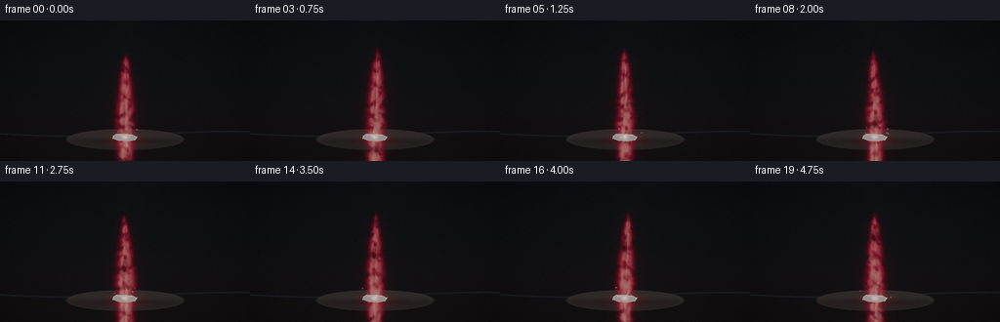
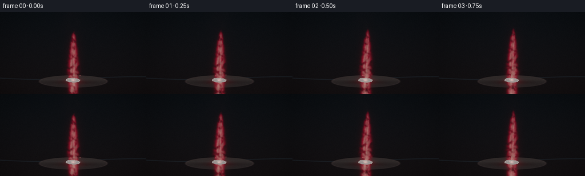
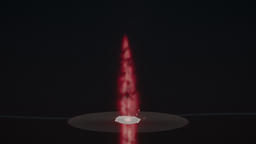
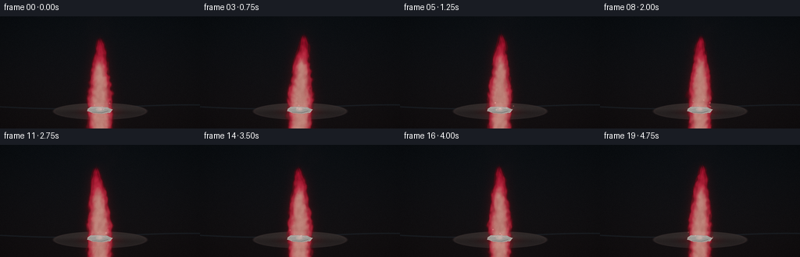
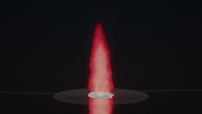
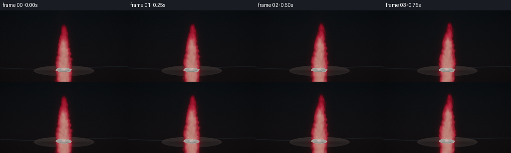
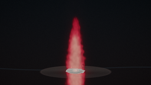
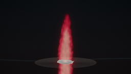

CODING AGENTS AS PIXEL WORLD MODELS
traex/DeepSeek-V4.1-Flash · phygen_128
点击播放 · 原生 RGB 像素
逐轮保存的候选
回放视频、检查图与代码变化。
每份候选均可单独播放。实际图片检查记录在下方工具轨迹中。
候选 01播放与检查图
点击播放 · 原生 RGB 像素


展开代码变化
--- 上一保存版本
+++ 本次保存版本
@@ -0,0 +1,334 @@
+"""Procedural lithium-flame scene for the PixelWorld text-to-video task."""
+
+from __future__ import annotations
+
+import argparse
+import math
+import shutil
+from pathlib import Path
+
+import numpy as np
+from PIL import Image, ImageDraw, ImageFilter
+from scipy.ndimage import gaussian_filter, map_coordinates
+
+import artifact_io
+
+
+OUT_W, OUT_H = 256, 144
+SUPERSAMPLE = 2
+W, H = OUT_W * SUPERSAMPLE, OUT_H * SUPERSAMPLE
+N_FRAMES = 20
+FPS = 4.0
+
+
+def smoothstep(edge0: float, edge1: float, x: np.ndarray) -> np.ndarray:
+ t = np.clip((x - edge0) / (edge1 - edge0), 0.0, 1.0)
+ return t * t * (3.0 - 2.0 * t)
+
+
+def make_noise_volume(seed: int = 17) -> np.ndarray:
+ """Build a tileable, multi-scale 3D noise volume."""
+ rng = np.random.default_rng(seed)
+ coarse = rng.standard_normal((12, 56, 20)).astype(np.float32)
+ medium = rng.standard_normal((24, 112, 40)).astype(np.float32)
+ fine = rng.standard_normal((48, 224, 80)).astype(np.float32)
+ volume = (
+ np.repeat(np.repeat(np.repeat(coarse, 4, axis=0), 4, axis=1), 4, axis=2)
+ + 0.48 * np.repeat(np.repeat(np.repeat(medium, 2, axis=0), 2, axis=1), 2, axis=2)
+ + 0.20 * fine
+ )
+ volume = gaussian_filter(volume, sigma=(2.0, 3.0, 2.0), mode="wrap")
+ volume -= volume.mean()
+ volume /= max(volume.std(), 1e-6)
+ return volume.astype(np.float32)
+
+
+def make_background() -> np.ndarray:
+ """Dark, softly lit refractory workspace."""
+ yy, xx = np.mgrid[0:H, 0:W].astype(np.float32)
+ nx = (xx - W * 0.5) / W
+ ny = (yy - H * 0.46) / H
+
+ top = np.array([7.0, 10.0, 13.0], dtype=np.float32)
+ bottom = np.array([14.0, 11.0, 12.0], dtype=np.float32)
+ mix = np.clip(yy / H, 0.0, 1.0)[..., None]
+ image = top * (1.0 - mix) + bottom * mix
+
+ vignette = np.clip(1.0 - 0.55 * (nx * nx * 1.4 + ny * ny * 1.1), 0.38, 1.0)
+ image *= vignette[..., None]
+
+ # A cool rim on the far bench edge keeps the dark background from feeling flat.
+ rim_y = H * 0.805 + 5.0 * np.sin(xx / W * math.pi * 1.6)
+ rim = np.exp(-((yy - rim_y) / 1.45) ** 2)
+ image += rim[..., None] * np.array([7.0, 12.0, 15.0], dtype=np.float32)
+
+ # Refractory pad: layered ellipses with a fine ceramic grain.
+ pad_cx, pad_cy = W * 0.5, H * 0.845
+ pad_rx, pad_ry = W * 0.235, H * 0.074
+ rng = np.random.default_rng(93)
+ grain = rng.standard_normal((H // 8, W // 8)).astype(np.float32)
+ grain = gaussian_filter(grain, sigma=1.2, mode="wrap")
+ grain = np.repeat(np.repeat(grain, 8, axis=0), 8, axis=1)[:H, :W]
+ grain = gaussian_filter(grain, sigma=1.5)
+
+ pad_d = ((xx - pad_cx) / pad_rx) ** 2 + ((yy - pad_cy) / pad_ry) ** 2
+ pad_mask = smoothstep(1.08, 0.91, pad_d)
+ pad_top = smoothstep(-0.25, 0.45, (pad_cy - yy) / pad_ry)
+ pad_color = np.broadcast_to(np.array([29.0, 25.0, 25.0], dtype=np.float32), image.shape).copy()
+ pad_color += pad_top[..., None] * np.array([8.0, 7.0, 6.0], dtype=np.float32)
+ pad_color += grain[..., None] * np.array([2.2, 1.7, 1.4], dtype=np.float32)
+ image = image * (1.0 - 0.88 * pad_mask[..., None]) + pad_color * (0.88 * pad_mask[..., None])
+
+ pad_edge = np.exp(-((np.sqrt(np.maximum(pad_d, 0.0)) - 0.98) / 0.025) ** 2)
+ image += pad_edge[..., None] * np.array([8.0, 5.0, 5.0], dtype=np.float32)
+
+ # Contact shadow and a very subdued reflected flame pool.
+ shadow = np.exp(-(((xx - W * 0.5) / (W * 0.13)) ** 2 + ((yy - H * 0.855) / (H * 0.022)) ** 2))
+ image *= 1.0 - 0.38 * shadow[..., None]
+ pool = np.exp(-(((xx - W * 0.5) / (W * 0.09)) ** 2 + ((yy - H * 0.855) / (H * 0.032)) ** 2))
+ image += pool[..., None] * np.array([22.0, 1.8, 3.2], dtype=np.float32)
+
+ return np.clip(image, 0.0, 255.0)
+
+
+def flame_field(
+ xx: np.ndarray,
+ yy: np.ndarray,
+ frame: int,
+ noise_volume: np.ndarray,
+) -> tuple[np.ndarray, np.ndarray]:
+ """Return accumulated flame emission and opacity from 24 depth slices."""
+ t = frame / FPS
+ base_y = H * 0.824
+ y_up = base_y - yy
+
+ # The flame breathes gently while the upper body sweeps a little farther.
+ height = H * (0.605 + 0.018 * math.sin(2.0 * t - 0.7))
+ height += 3.2 * np.sin(0.8 * t + 0.4)
+ t_up = np.clip(y_up / height, 0.0, 1.15)
+ sway = (W * 0.010) * (t_up ** 1.6) * math.sin(1.75 * t + 0.9)
+ sway += (W * 0.0045) * t_up * math.sin(5.2 * t - 1.2)
+ axis_x = W * 0.5 + sway
+
+ base_radius = W * (0.060 + 0.004 * math.sin(2.8 * t + 0.2))
+ profile = np.power(np.clip(1.0 - t_up, 0.0, 1.0), 0.54)
+ profile *= 0.70 + 0.30 * smoothstep(0.0, 0.18, t_up)
+ radius = base_radius * profile
+
+ emission = np.zeros((H, W, 3), dtype=np.float32)
+ transmittance = np.ones((H, W), dtype=np.float32)
+ accumulated_alpha = np.zeros((H, W), dtype=np.float32)
+
+ nz, ny, nx = noise_volume.shape
+ z_slices = np.linspace(-0.95, 0.95, 22, dtype=np.float32)
+ for zi, z in enumerate(z_slices):
+ depth_radius = np.sqrt(max(0.0, 1.0 - 0.42 * z * z))
+ local_radius = np.maximum(radius * depth_radius, 0.6)
+ x_here = xx - axis_x + z * W * 0.009
+ qx = x_here / local_radius
+ qz = z / 0.84
+ radial = np.sqrt(qx * qx + qz * qz)
+
+ # Turbulence is advected upward and expanded as it rises.
+ sample_x = xx * 0.90 + (z + 1.0) * 19.0 + 4.0 * np.sin(yy * 0.035 + t)
+ sample_y = y_up - 36.0 * t + 7.0 * np.sin(xx * 0.027 + 1.3 * t)
+ sample_z = z * 18.0 + 27.0
+ turbulence = map_coordinates(
+ noise_volume,
+ [
+ np.full_like(xx, sample_z),
+ np.mod(sample_y, ny - 1),
+ np.mod(sample_x, nx - 1),
+ ],
+ order=1,
+ mode="nearest",
+ )
+ angle = np.arctan2(qz, qx + 1e-5)
+ lobes = 0.76 + 0.24 * np.cos(5.0 * angle + 1.1 * np.sin(6.5 * t_up - 2.1 * t))
+ body = smoothstep(1.16, 0.30, radial)
+ vertical_tip = smoothstep(1.06, 0.84, t_up)
+ density = body * lobes * vertical_tip
+ density *= smoothstep(-0.70, 0.75, turbulence * 0.66 + 0.50 - 0.52 * radial)
+ density *= 0.94 + 0.06 * math.sin(zi * 1.7 + frame * 0.9)
+
+ alpha = 1.0 - np.exp(-density * 0.155)
+ heat = np.clip(
+ 0.19
+ + 0.72 * density
+ + 0.36 * np.exp(-3.6 * (qx * qx + qz * qz))
+ - 0.22 * t_up,
+ 0.0,
+ 1.0,
+ )
+ heat = heat * heat * (3.0 - 2.0 * heat)
+
+ # Lithium emission: deep carmine at the edge, crimson body, pink-white core.
+ c0 = np.array([62.0, 0.8, 13.0], dtype=np.float32)
+ c1 = np.array([205.0, 6.0, 34.0], dtype=np.float32)
+ c2 = np.array([255.0, 56.0, 76.0], dtype=np.float32)
+ c3 = np.array([255.0, 190.0, 164.0], dtype=np.float32)
+ h = heat[..., None]
+ color = np.empty_like(emission)
+ color[...] = c0
+ lo = h < 0.55
+ mid = (h >= 0.55) & (h < 0.82)
+ hi = h >= 0.82
+ color = np.where(lo, c0 + (c1 - c0) * (h / 0.55), color)
+ color = np.where(mid, c1 + (c2 - c1) * ((h - 0.55) / 0.27), color)
+ color = np.where(hi, c2 + (c3 - c2) * ((h - 0.82) / 0.18), color)
+
+ emission += transmittance[..., None] * color * alpha[..., None] * 0.88
+ transmittance *= 1.0 - alpha
+ accumulated_alpha = 1.0 - transmittance
+
+ return emission, accumulated_alpha
+
+
+def add_sparks(image: np.ndarray, frame: int) -> np.ndarray:
+ """Add small rising carmine sparks with deterministic trajectories."""
+ t = frame / FPS
+ rng = np.random.default_rng(404)
+ count = 34
+ births = rng.uniform(-0.8, 4.3, count)
+ lives = rng.uniform(0.55, 1.55, count)
+ x0 = W * 0.5 + rng.normal(0.0, W * 0.033, count)
+ y0 = H * 0.833 + rng.normal(0.0, H * 0.008, count)
+ vx = rng.normal(0.0, W * 0.010, count)
+ vy = rng.uniform(H * 0.055, H * 0.155, count)
+ phase = rng.uniform(0.0, 2.0 * math.pi, count)
+ brightness = rng.uniform(0.45, 1.0, count)
+
+ canvas = np.zeros((H, W), dtype=np.float32)
+ yy, xx = np.mgrid[0:H, 0:W]
+ for i in range(count):
+ age = t - births[i]
+ if age < 0.0 or age > lives[i]:
+ continue
+ life_fade = math.sin(math.pi * min(age / lives[i], 1.0)) ** 0.7
+ x = x0[i] + vx[i] * age + 2.5 * math.sin(4.0 * age + phase[i])
+ y = y0[i] - vy[i] * age + 16.0 * age * age
+ sigma = 0.70 + 0.35 * age
+ glow = np.exp(-((xx - x) ** 2 + (yy - y) ** 2) / (2.0 * sigma * sigma))
+ canvas += glow * brightness[i] * life_fade
+
+ canvas = gaussian_filter(canvas, 0.45)
+ spark_color = np.array([255.0, 92.0, 94.0], dtype=np.float32)
+ image += canvas[..., None] * spark_color
+ return image
+
+
+def draw_lithium_sample(image: np.ndarray) -> np.ndarray:
+ """Draw a small, partly molten lithium strip with a metallic highlight."""
+ layer = Image.new("RGBA", (W, H), (0, 0, 0, 0))
+ draw = ImageDraw.Draw(layer)
+ cx, cy = W * 0.5, H * 0.831
+ points = [
+ (cx - 24, cy - 3),
+ (cx - 18, cy - 7),
+ (cx - 3, cy - 8),
+ (cx + 14, cy - 6),
+ (cx + 24, cy - 1),
+ (cx + 19, cy + 6),
+ (cx + 3, cy + 9),
+ (cx - 14, cy + 7),
+ (cx - 25, cy + 3),
+ ]
+ draw.polygon(points, fill=(151, 151, 148, 255))
+ draw.line(points + [points[0]], fill=(214, 208, 199, 255), width=2)
+ draw.line([(cx - 17, cy - 4), (cx - 5, cy - 6), (cx + 13, cy - 4)], fill=(239, 226, 210, 255), width=2)
+ draw.ellipse((cx - 9, cy - 5, cx + 3, cy + 1), fill=(190, 184, 176, 255))
+ layer = layer.filter(ImageFilter.GaussianBlur(0.55))
+ rgba = np.asarray(layer).astype(np.float32)
+ alpha = rgba[..., 3:4] / 255.0
+ image = image * (1.0 - alpha) + rgba[..., :3] * alpha
+
+ # Incandescent rim and a compact white-hot spot where the flame is rooted.
+ yy, xx = np.mgrid[0:H, 0:W]
+ rim = np.exp(-(((xx - cx) / 23.0) ** 2 + ((yy - cy) / 10.0) ** 2))
+ rim *= smoothstep(0.25, 1.0, np.sqrt(((xx - cx) / 25.0) ** 2 + ((yy - cy) / 12.0) ** 2))
+ image += rim[..., None] * np.array([39.0, 3.0, 5.0], dtype=np.float32)
+ hot = np.exp(-(((xx - cx) / 7.0) ** 2 + ((yy - cy) / 4.5) ** 2))
+ image += hot[..., None] * np.array([155.0, 66.0, 56.0], dtype=np.float32)
+ return image
+
+
+def add_smoke(image: np.ndarray, frame: int, noise_volume: np.ndarray) -> np.ndarray:
+ """A restrained veil above the flame, kept away from the colored core."""
+ t = frame / FPS
+ yy, xx = np.mgrid[0:H, 0:W].astype(np.float32)
+ upper = smoothstep(H * 0.46, H * 0.12, yy)
+ column = np.exp(-((xx - W * 0.5 - 10.0 * np.sin(0.55 * t)) / (W * 0.095)) ** 2)
+ smoke = upper * column
+ texture = map_coordinates(
+ noise_volume,
+ [
+ np.full_like(xx, 11.0 + 2.0 * t),
+ np.mod(yy * 0.42 - 15.0 * t, noise_volume.shape[1] - 1),
+ np.mod(xx * 0.31 + 7.0 * t, noise_volume.shape[2] - 1),
+ ],
+ order=1,
+ mode="nearest",
+ )
+ smoke *= 0.45 + 0.55 * smoothstep(-0.5, 1.2, texture)
+ smoke = gaussian_filter(smoke, 6.0) * 0.055
+ smoke_color = np.array([52.0, 27.0, 29.0], dtype=np.float32)
+ return image * (1.0 - smoke[..., None]) + smoke_color * smoke[..., None]
+
+
+def render_frame(frame: int, background: np.ndarray, noise_volume: np.ndarray) -> np.ndarray:
+ yy, xx = np.mgrid[0:H, 0:W].astype(np.float32)
+ image = background.copy()
+
+ emission, alpha = flame_field(xx, yy, frame, noise_volume)
+ image = add_smoke(image, frame, noise_volume)
+
+ # Broad red bloom around the flame, with a tighter hot halo.
+ glow_energy = emission.max(axis=2)
+ broad = gaussian_filter(glow_energy, 15.0)
+ tight = gaussian_filter(glow_energy, 4.0)
+ image += broad[..., None] * np.array([0.20, 0.010, 0.018], dtype=np.float32)
+ image += tight[..., None] * np.array([0.26, 0.020, 0.028], dtype=np.float32)
+ image = image * (1.0 - alpha[..., None]) + emission * 1.16
+
+ image = draw_lithium_sample(image)
+ image = add_sparks(image, frame)
+
+ # Gentle filmic rolloff preserves a luminous core without clipping into white.
+ normalized = np.maximum(image, 0.0) / 255.0
+ normalized = 1.0 - np.exp(-normalized * 1.28)
+ image = np.power(normalized, 0.92) * 255.0
+
+ # Fine optical grain, very light so the flame remains smooth.
+ rng = np.random.default_rng(1200 + frame)
+ grain = rng.normal(0.0, 1.15, (H, W, 1)).astype(np.float32)
+ image += grain
+ return np.clip(image, 0.0, 255.0).astype(np.uint8)
+
+
+def generate(output_dir: Path) -> None:
+ output_dir.mkdir(parents=True, exist_ok=True)
+ background = make_background()
+ noise_volume = make_noise_volume()
+ frames = []
+ for frame in range(N_FRAMES):
+ high = render_frame(frame, background, noise_volume)
+ image = Image.fromarray(high).resize((OUT_W, OUT_H), Image.Resampling.LANCZOS)
+ frames.append(np.asarray(image, dtype=np.uint8))
+
+ frames = np.stack(frames)
+ artifact_io.save(frames, output_dir)
+
+
+def main() -> None:
+ parser = argparse.ArgumentParser()
+ parser.add_argument("output_dir", nargs="?", default=".")
+ args = parser.parse_args()
+ output_dir = Path(args.output_dir).resolve()
+ if output_dir != Path.cwd().resolve():
+ shutil.copy2(Path(__file__).with_name("prompt.txt"), output_dir / "prompt.txt")
+ shutil.copy2(Path(__file__).with_name("task_spec.json"), output_dir / "task_spec.json")
+ generate(output_dir)
+
+
+if __name__ == "__main__":
+ main()
候选 02播放与检查图
点击播放 · 原生 RGB 像素

展开代码变化
--- 上一保存版本
+++ 本次保存版本
@@ -97,42 +97,40 @@
frame: int,
noise_volume: np.ndarray,
) -> tuple[np.ndarray, np.ndarray]:
- """Return accumulated flame emission and opacity from 24 depth slices."""
+ """Return a softly layered, tapered lithium flame."""
t = frame / FPS
- base_y = H * 0.824
+ base_y = H * 0.817
y_up = base_y - yy
- # The flame breathes gently while the upper body sweeps a little farther.
- height = H * (0.605 + 0.018 * math.sin(2.0 * t - 0.7))
- height += 3.2 * np.sin(0.8 * t + 0.4)
- t_up = np.clip(y_up / height, 0.0, 1.15)
- sway = (W * 0.010) * (t_up ** 1.6) * math.sin(1.75 * t + 0.9)
- sway += (W * 0.0045) * t_up * math.sin(5.2 * t - 1.2)
+ height = H * (0.635 + 0.020 * math.sin(1.7 * t - 0.4))
+ height += 3.5 * np.sin(0.85 * t + 0.2)
+ t_up = np.clip(y_up / height, 0.0, 1.16)
+ sway = W * 0.016 * (t_up ** 1.75) * math.sin(1.4 * t + 0.55)
+ sway += W * 0.006 * t_up * math.sin(4.3 * t - 1.4)
+ sway += W * 0.003 * np.sin(yy * 0.085 + 1.5 * t) * t_up
axis_x = W * 0.5 + sway
- base_radius = W * (0.060 + 0.004 * math.sin(2.8 * t + 0.2))
- profile = np.power(np.clip(1.0 - t_up, 0.0, 1.0), 0.54)
- profile *= 0.70 + 0.30 * smoothstep(0.0, 0.18, t_up)
+ base_radius = W * (0.086 + 0.005 * math.sin(2.4 * t + 0.6))
+ profile = np.power(np.clip(1.0 - t_up, 0.0, 1.0), 0.64)
+ profile *= 0.82 + 0.18 * smoothstep(0.0, 0.16, t_up)
radius = base_radius * profile
+ nz, ny, nx = noise_volume.shape
+ local_radius = np.maximum(radius, 0.8)
+ qx = (xx - axis_x) / local_radius
+
+ # Three parallax layers make the outer edges curl without a visible tube.
emission = np.zeros((H, W, 3), dtype=np.float32)
- transmittance = np.ones((H, W), dtype=np.float32)
- accumulated_alpha = np.zeros((H, W), dtype=np.float32)
-
- nz, ny, nx = noise_volume.shape
- z_slices = np.linspace(-0.95, 0.95, 22, dtype=np.float32)
- for zi, z in enumerate(z_slices):
- depth_radius = np.sqrt(max(0.0, 1.0 - 0.42 * z * z))
- local_radius = np.maximum(radius * depth_radius, 0.6)
- x_here = xx - axis_x + z * W * 0.009
- qx = x_here / local_radius
- qz = z / 0.84
- radial = np.sqrt(qx * qx + qz * qz)
-
- # Turbulence is advected upward and expanded as it rises.
- sample_x = xx * 0.90 + (z + 1.0) * 19.0 + 4.0 * np.sin(yy * 0.035 + t)
- sample_y = y_up - 36.0 * t + 7.0 * np.sin(xx * 0.027 + 1.3 * t)
- sample_z = z * 18.0 + 27.0
+ alpha_sum = np.zeros((H, W), dtype=np.float32)
+ for layer, (z, gain) in enumerate(((-0.75, 0.58), (0.0, 0.92), (0.70, 0.52))):
+ depth_radius = 0.96 - 0.14 * abs(z)
+ x_here = xx - axis_x - z * W * 0.013
+ qx_layer = x_here / (local_radius * depth_radius)
+ radial = np.abs(qx_layer)
+
+ sample_x = xx * 0.76 + z * 31.0 + 3.0 * np.sin(yy * 0.038 + t)
+ sample_y = y_up * 0.77 - 35.0 * t + 5.0 * np.sin(xx * 0.026 + 1.2 * t)
+ sample_z = 24.0 + z * 20.0
turbulence = map_coordinates(
noise_volume,
[
@@ -143,45 +141,35 @@
order=1,
mode="nearest",
)
- angle = np.arctan2(qz, qx + 1e-5)
- lobes = 0.76 + 0.24 * np.cos(5.0 * angle + 1.1 * np.sin(6.5 * t_up - 2.1 * t))
- body = smoothstep(1.16, 0.30, radial)
- vertical_tip = smoothstep(1.06, 0.84, t_up)
- density = body * lobes * vertical_tip
- density *= smoothstep(-0.70, 0.75, turbulence * 0.66 + 0.50 - 0.52 * radial)
- density *= 0.94 + 0.06 * math.sin(zi * 1.7 + frame * 0.9)
-
- alpha = 1.0 - np.exp(-density * 0.155)
- heat = np.clip(
- 0.19
- + 0.72 * density
- + 0.36 * np.exp(-3.6 * (qx * qx + qz * qz))
- - 0.22 * t_up,
- 0.0,
- 1.0,
- )
+ edge_warp = 0.93 + 0.07 * turbulence + 0.025 * np.sin(8.0 * t_up - 2.0 * t + z * 3.0)
+ body = smoothstep(1.02, 0.76, radial / edge_warp)
+ body *= smoothstep(1.08, 0.91, t_up)
+ body *= 0.82 + 0.18 * smoothstep(-1.2, 1.0, turbulence)
+
+ # Warm detached tip wisps.
+ tip_y = 1.0 - t_up
+ wisps = np.exp(-((qx_layer / 0.22) ** 2 + ((tip_y - 0.05) / 0.10) ** 2))
+ wisps *= 0.35 + 0.65 * smoothstep(-0.6, 1.0, turbulence)
+ density = np.maximum(body, wisps * 0.32)
+ alpha = density * (0.33 + gain * 0.30)
+ alpha_sum = np.maximum(alpha_sum, alpha)
+
+ core = np.exp(-3.5 * (qx_layer * qx_layer + 5.0 * np.clip(t_up - 0.48, 0.0, 1.0) ** 2))
+ heat = np.clip(0.20 + 0.46 * density + 0.50 * core - 0.15 * t_up, 0.0, 1.0)
heat = heat * heat * (3.0 - 2.0 * heat)
-
- # Lithium emission: deep carmine at the edge, crimson body, pink-white core.
- c0 = np.array([62.0, 0.8, 13.0], dtype=np.float32)
- c1 = np.array([205.0, 6.0, 34.0], dtype=np.float32)
- c2 = np.array([255.0, 56.0, 76.0], dtype=np.float32)
- c3 = np.array([255.0, 190.0, 164.0], dtype=np.float32)
+ c0 = np.array([48.0, 0.5, 9.0], dtype=np.float32)
+ c1 = np.array([174.0, 3.0, 25.0], dtype=np.float32)
+ c2 = np.array([255.0, 35.0, 56.0], dtype=np.float32)
+ c3 = np.array([255.0, 145.0, 126.0], dtype=np.float32)
h = heat[..., None]
- color = np.empty_like(emission)
- color[...] = c0
- lo = h < 0.55
- mid = (h >= 0.55) & (h < 0.82)
- hi = h >= 0.82
- color = np.where(lo, c0 + (c1 - c0) * (h / 0.55), color)
- color = np.where(mid, c1 + (c2 - c1) * ((h - 0.55) / 0.27), color)
- color = np.where(hi, c2 + (c3 - c2) * ((h - 0.82) / 0.18), color)
-
- emission += transmittance[..., None] * color * alpha[..., None] * 0.88
- transmittance *= 1.0 - alpha
- accumulated_alpha = 1.0 - transmittance
-
- return emission, accumulated_alpha
+ color = np.where(h < 0.5, c0 + (c1 - c0) * (h / 0.5), c1)
+ color = np.where((h >= 0.5) & (h < 0.82), c1 + (c2 - c1) * ((h - 0.5) / 0.32), color)
+ color = np.where(h >= 0.82, c2 + (c3 - c2) * ((h - 0.82) / 0.18), color)
+ emission += color * (alpha * gain)[..., None]
+
+ emission *= 0.72
+ alpha_sum = np.clip(alpha_sum * 1.05, 0.0, 0.96)
+ return emission, alpha_sum
def add_sparks(image: np.ndarray, frame: int) -> np.ndarray:
@@ -221,34 +209,35 @@
"""Draw a small, partly molten lithium strip with a metallic highlight."""
layer = Image.new("RGBA", (W, H), (0, 0, 0, 0))
draw = ImageDraw.Draw(layer)
- cx, cy = W * 0.5, H * 0.831
+ cx, cy = W * 0.5, H * 0.834
points = [
- (cx - 24, cy - 3),
- (cx - 18, cy - 7),
- (cx - 3, cy - 8),
- (cx + 14, cy - 6),
- (cx + 24, cy - 1),
- (cx + 19, cy + 6),
- (cx + 3, cy + 9),
- (cx - 14, cy + 7),
- (cx - 25, cy + 3),
+ (cx - 31, cy - 3),
+ (cx - 23, cy - 8),
+ (cx - 5, cy - 9),
+ (cx + 18, cy - 7),
+ (cx + 31, cy - 1),
+ (cx + 24, cy + 7),
+ (cx + 4, cy + 10),
+ (cx - 18, cy + 8),
+ (cx - 32, cy + 3),
]
- draw.polygon(points, fill=(151, 151, 148, 255))
- draw.line(points + [points[0]], fill=(214, 208, 199, 255), width=2)
- draw.line([(cx - 17, cy - 4), (cx - 5, cy - 6), (cx + 13, cy - 4)], fill=(239, 226, 210, 255), width=2)
- draw.ellipse((cx - 9, cy - 5, cx + 3, cy + 1), fill=(190, 184, 176, 255))
- layer = layer.filter(ImageFilter.GaussianBlur(0.55))
+ draw.polygon(points, fill=(173, 170, 161, 255))
+ draw.line(points + [points[0]], fill=(231, 222, 207, 255), width=2)
+ draw.line([(cx - 22, cy - 5), (cx - 7, cy - 7), (cx + 18, cy - 4)], fill=(249, 235, 218, 255), width=2)
+ draw.line([(cx - 20, cy + 5), (cx + 3, cy + 7), (cx + 20, cy + 2)], fill=(100, 95, 91, 255), width=2)
+ draw.ellipse((cx - 11, cy - 5, cx + 5, cy + 2), fill=(207, 196, 180, 255))
+ layer = layer.filter(ImageFilter.GaussianBlur(0.45))
rgba = np.asarray(layer).astype(np.float32)
alpha = rgba[..., 3:4] / 255.0
image = image * (1.0 - alpha) + rgba[..., :3] * alpha
# Incandescent rim and a compact white-hot spot where the flame is rooted.
yy, xx = np.mgrid[0:H, 0:W]
- rim = np.exp(-(((xx - cx) / 23.0) ** 2 + ((yy - cy) / 10.0) ** 2))
- rim *= smoothstep(0.25, 1.0, np.sqrt(((xx - cx) / 25.0) ** 2 + ((yy - cy) / 12.0) ** 2))
- image += rim[..., None] * np.array([39.0, 3.0, 5.0], dtype=np.float32)
- hot = np.exp(-(((xx - cx) / 7.0) ** 2 + ((yy - cy) / 4.5) ** 2))
- image += hot[..., None] * np.array([155.0, 66.0, 56.0], dtype=np.float32)
+ rim = np.exp(-(((xx - cx) / 31.0) ** 2 + ((yy - cy) / 11.0) ** 2))
+ rim *= smoothstep(0.35, 1.0, np.sqrt(((xx - cx) / 33.0) ** 2 + ((yy - cy) / 13.0) ** 2))
+ image += rim[..., None] * np.array([24.0, 1.5, 3.0], dtype=np.float32)
+ hot = np.exp(-(((xx - cx) / 8.0) ** 2 + ((yy - cy + 3.0) / 5.0) ** 2))
+ image += hot[..., None] * np.array([84.0, 23.0, 22.0], dtype=np.float32)
return image
可观测工具轨迹
实际执行的命令与返回图片。
命令 1exit 0
/bin/bash -c "pwd && rg --files -g 'prompt.txt' -g 'GENERATION_RULES.md' -g 'task_spec.json' -g '"'!**/.git/**'"'"
命令 2exit 0
/bin/bash -c 'git status --short && ls -la'
命令 3exit 0
/bin/bash -c 'cat prompt.txt'
命令 4exit 0
/bin/bash -c 'cat GENERATION_RULES.md'
命令 5exit 0
/bin/bash -c 'cat task_spec.json'
命令 6exit 0
/bin/bash -c "sed -n '1,240p' artifact_io.py && sed -n '1,220p' player_template.html"
命令 7exit 0
/bin/bash -c "python - <<'PY' import importlib.util for m in ['numpy','PIL','scipy','imageio','cv2']: print(m, bool(importlib.util.find_spec(m))) PY ffmpeg -version | head -1 || true"
命令 8exit 1
/bin/bash -c 'python generate.py'
命令 9exit 0
/bin/bash -c 'python generate.py'
命令 10exit 0
/bin/bash -c 'mkdir -p .tmp/candidate_v1 && cp -a frames pixels.npz inspection.png transition_check.png index.html .tmp/candidate_v1/'
命令 11exit 0
/bin/bash -c 'python generate.py'
命令 12exit 0
/bin/bash -c 'mkdir -p .tmp/candidate_v2 && cp -a frames pixels.npz inspection.png transition_check.png index.html .tmp/candidate_v2/'
命令 13exit 0
/bin/bash -c "ls -lh generate.py index.html pixels.npz inspection.png transition_check.png frames/00.png frames/19.png && python - <<'PY'
import numpy as np
from PIL import Image
p=np.load('pixels.npz')['pixels']
print('pixels:',p.shape,p.dtype,'range',int(p.min()),int(p.max()))
imgs=[np.asarray(Image.open(f'frames/{i:02d}.png')) for i in range(20)]
print('frame sizes:', sorted({x.shape for x in imgs}))
d=[np.mean(np.abs(imgs[i].astype(float)-imgs[i-1].astype(float))) for i in range(1,20)]
print('consecutive mean abs diff: min %.3f max %.3f mean %.3f' % (min(d),max(d),np.mean(d)))
print('flame-red pixel count range:', min(((x[:,:,0]>120)&(x[:,:,0]>x[:,:,1]*1.8)).sum() for x in imgs), max(((x[:,:,0]>120)&(x[:,:,0]>x[:,:,1]*1.8)).sum() for x in imgs))
PY"命令 14exit 0
/bin/bash -c "python -m py_compile generate.py && python - <<'PY'
import json,re
from pathlib import Path
h=Path('index.html').read_text()
assert 'window.__pixelReady' in h and 'const DATA=' in h
assert 'task_spec' not in h
m=re.search(r'const DATA=(\\{.*?\\}),W=',h)
d=json.loads(m.group(1))
assert (d['width'],d['height'],d['frames'],d['fps'])==(256,144,20,4.0)
assert len(d['deltas'])==19 and d['audio'] is None
print('index.html payload valid:',d['width'],d['height'],d['frames'],d['fps'],'deltas',len(d['deltas']))
PY"命令 15exit 0
/bin/bash -c "python - <<'PY'
import importlib.util
print('playwright', bool(importlib.util.find_spec('playwright')))
PY
which chromium chromium-browser google-chrome firefox 2>/dev/null || true"命令 16exit 1
/bin/bash -c "python - <<'PY'
from playwright.sync_api import sync_playwright
from pathlib import Path
url=Path('index.html').resolve().as_uri()
with sync_playwright() as p:
browser=p.chromium.launch(headless=True)
page=browser.new_page(viewport={'width':900,'height':650})
errors=[]
page.on('pageerror',lambda e: errors.append(str(e)))
page.goto(url,wait_until='load')
page.wait_for_function('window.__pixelReady===true')
page.click('#play')
page.wait_for_timeout(1300)
page.screenshot(path='.tmp/playback.png')
status=page.locator('#time').inner_text()
assert not errors, errors
assert page.evaluate('frames.length')==20
print('browser playback:',status)
browser.close()
PY"命令 17exit 1
/bin/bash -c 'mkdir -p .tmp/playwright && TMPDIR="$PWD/.tmp/playwright" python - <<'"'PY'
from playwright.sync_api import sync_playwright
from pathlib import Path
url=Path('index.html').resolve().as_uri()
with sync_playwright() as p:
browser=p.chromium.launch(headless=True)
page=browser.new_page(viewport={'width':900,'height':650})
errors=[]
page.on('pageerror',lambda e: errors.append(str(e)))
page.goto(url,wait_until='load')
page.wait_for_function('window.__pixelReady===true')
page.click('#play')
page.wait_for_timeout(1300)
page.screenshot(path='.tmp/playback.png')
status=page.locator('#time').inner_text()
assert not errors, errors
assert page.evaluate('frames.length')==20
print('browser playback:',status)
browser.close()
PY"命令 18exit 1
/bin/bash -c "python - <<'PY'
from pathlib import Path
from generate import generate
import hashlib
out=Path('.tmp/repro')
generate(out)
for name in ['pixels.npz','frames/00.png','frames/10.png','frames/19.png']:
a=hashlib.sha256(Path(name).read_bytes()).hexdigest()
b=hashlib.sha256((out/name).read_bytes()).hexdigest()
print(name, 'identical' if a==b else 'DIFF')
PY"视觉工具实际返回图片 1

视觉工具实际返回图片 2

视觉工具实际返回图片 3

视觉工具实际返回图片 4

视觉工具实际返回图片 5

视觉工具实际返回图片 6

视觉工具实际返回图片 7

保存候选 2 份；完成命令 18 次；可验证图片返回 7 张。原始 API 响应与完整日志保留在本地。